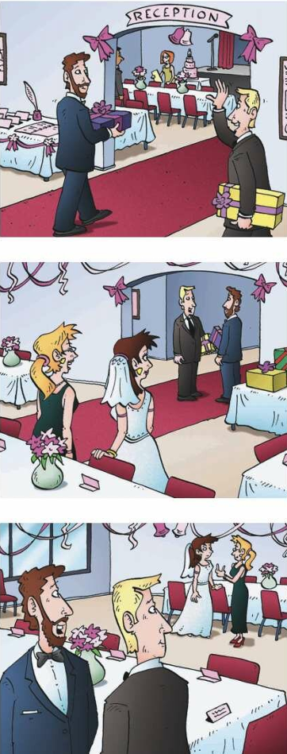

Study the vocabulary. Then work with a partner. Tell your partner about the jobs of people you know.
EXAMPLE: A: My father is a bus driver. And my sister is a nurse.
B: Really? My father is a teacher. My cousin Barbara is a server.

1 What does he do?: What is his job?
Go to MyEnglishLab for more grammar in context practice.
| Yes/No Questions | Short Answers | Negative |
|---|---|---|
| Singular | ||
| Am I right? | Yes, you are. | No, you're not. Or No, you aren't. |
| Are you a writer? | Yes, I am. | No, I'm not. |
| Is he a bus driver? | Yes, he is. | No, he's not. Or No, he isn't. |
| Is she single? | Yes, she is. | No, she's not. Or No, she isn't. |
| Is your car new? | Yes, it is. | No, it's not. Or No, it isn't. |
| Plural | ||
| Are we late? | Yes, we are. | No, we're not. Or No, we aren't. |
| Are you happy? | Yes, you are. | No, you're not. Or No, you aren't. |
| Are they brothers? | Yes, they are. | No, they're not. Or No, they aren't. |
| Questions with Who/What | Short Answers | Long Answers |
|---|---|---|
| Who is that woman? | Kathy. | That's Kathy. |
| What's her name? | Kathy. | It's Kathy. |

In a yes/no question with be, put am, is, or are before the subject.
SUBJECT He is at a wedding. (statement)
SUBJECT Is he at a wedding? (question)
Negative short answers have two forms. We often use contractions in negative short answers.
A: Is she married?
B: No, she's not. Or No, she isn't.
A: Are they brothers?
B: No, they're not. Or No, they aren't.
Affirmative short answers have only one form.
A: Am I right?
B: Yes, you are.
A: Is she single?
B: Yes, she is.
BE CAREFUL!
Don't use contractions in affirmative short answers.
A: Is she a server?
B: Yes, she is.
NOT Yes, she's.
We use who and what to ask about the subject of a sentence.
Use who to ask about people.
Use what to ask about things or ideas.
Who is that woman with Amanda?
What is her name?
We often use the contractions who's and what's in speaking and informal writing.
Answers to these questions can be long or short.
A: Who's that man?
B: That's Mark. Or Mark.
For definitions of grammar terms, see the Glossary on page 375.

GRAMMAR NOTES 1–3 Underline the yes/no questions. Circle the wh- questions. Then match the questions and answers.
GRAMMAR NOTE 3 Complete the conversations with who or what.
GRAMMAR NOTES 1–3 Complete the conversation between Ben and Annie and their uncle Steve. Use the correct forms of the words in parentheses. Use contractions.

GRAMMAR NOTES 1–3 Put the words in the correct order. Make conversations.
GRAMMAR NOTES 1–3 There are six mistakes in the conversations. The first mistake is corrected. Correct five more.

A Listen to the conversation. Then listen again. Answer each question with a short answer.
B Listen again. Answer the questions. Circle the correct answers.
C Work with a partner. Compare your answers in A and B.
A CONVERSATION Work with a partner. Practice the conversation with the jobs in the pictures.
B Walk around the room. Practice the conversation with different classmates. Use other jobs from this unit or your real job.
C Work with your partner again. Ask your partner about other people in the class.
EXAMPLE: A: Who's the man near Mei-ling?
B: That's Hussein.
A: What does he do?
B: He's a bus driver.
GAME Work in a group. Write the name of a famous living person on a piece of paper. Choose a classmate and put the piece of paper on his or her back. Your classmate asks yes/no questions to guess the name of the person.

EXAMPLE: A: Is it a man?
B: No, it isn't.
A: Is she beautiful?
C: Yes, she is.
A: Is she an actor?
D: Yes, she is.
A: Is she Angelina Jolie?
E: Yes, she is!

A BEFORE YOU WRITE Read the interview. Underline who, what, and yes/no questions. Then work with a partner. Interview him or her and complete the chart. Ask the questions in Rosa's interview or your own questions. Take turns.
| Your Questions | Your Partner's Answers |
|---|---|
B WRITE Write your interview questions and your partner's answers. Use yes/no, who, and what questions. Use the interview in A and your chart to help you.
C CHECK YOUR WORK Read your interview. Underline yes/no, who, and what questions. Use the Editing Checklist to check your work.
Editing Checklist
Did you ...?
D REVISE YOUR WORK Read your paragraph again. Can you improve your writing? Make changes if necessary.

Test yourself on the grammar of the unit.
A Match the questions and answers.
B Complete the conversation with who or what.
C Correct the conversations. There are five mistakes.